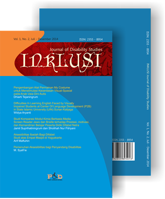

INKLUSI: Journal of Disability Studies is an accredited academic journal focusing on the issues of disabilities, the rights of people with disabilities, and efforts to promote an all inclusive society. It is a peer-reviewed journal published by the Center for Disablity Services (PLD) at UIN Sunan Kalijaga, Yogyakarta. The journal accepts submission of quality papers, research based articles, without regard the disciplines.
More about ...
More about ...

INKLUSI: Journal of Disability Studies adalah jurnal ilmiah terakreditasi Kemenristek Dikti yang memiliki fokus kajian dalam masalah-masalah disabilitas, hak-hak penyandang disabilitas, dan upaya-upaya untuk menciptakan masyarakat yang inklusif. Jurnal INKLUSI diterbitkan oleh Pusat Layanan Difabel (PLD) UIN Sunan Kalijaga, Yogyakarta. Kiriman artikel berkualitas lintas disiplin ilmu dapat diterima selama terkait dengan fokus kajian disabilitas.
Vol 5, No 2 (2018)
Table of Contents
Articles
|
Fathimah Salma Zahirah, Didi Sukyadi
|
153-178
|
|
Subar Junanto, Nur Arini Asmaul Kusna
|
179-194
|
|
Siti Maulidatul Mukaromah
|
195-216
|
|
Ririn Nopiah, Puji Amalia Islami
|
217-238
|